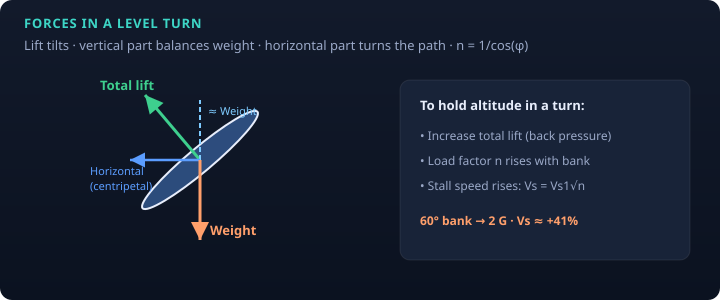
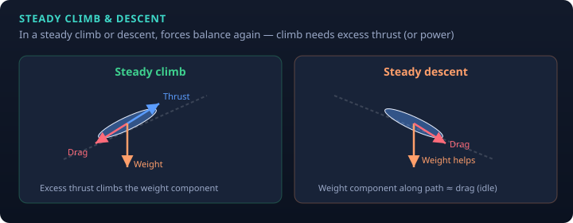

In straight-and-level unaccelerated flight the four forces balance:
lift = weight, thrust = drag.
In maneuvers those equalities change—but in a steady climb, descent, or turn, forces still form a closed balance; the pieces just rearrange.
Level coordinated turn
You bank so total lift tilts. The vertical component of lift must still equal weight (to hold altitude).
The horizontal component provides the centripetal force that curves the flight path.
That means total lift must be greater than weight → load factor \(n = 1/\cos\phi\).

Figure 1. Level turn force picture. Back pressure increases AOA/lift; stall speed rises with √n
(see AOA & load factor).
60° bank → 2 G; stall speed ≈ 1.41 × 1 G stall speed.
A constant-altitude 90° bank is not sustainable (n → ∞ mathematically).
Uncoordinated flight (ball not centered) changes the force picture and raises spin risk if you stall.
Steady climb and descent

Figure 2. Climb needs excess thrust (or power) to overcome the weight component along the path.
In a steady power-off glide, a component of weight balances drag.
Maneuver
Key idea
Steady climb
Thrust > drag along the flight path; excess overcomes weight’s rearward component. Climb angle/rate limited by excess thrust/power and drag.
Steady descent / glide
Weight helps pull you down the path; thrust may be low or zero. Best glide relates to max L/D (see drag polar).
Level turn
Lift > weight; horizontal lift turns you; n and stall speed rise with bank.
Pilot takeaways
Add power and/or reduce bank if you lose altitude in a turn (or lower the nose carefully—know your goal).
Steep turns: energy, stall margin, and coordination matter together.
Climb performance is a density-altitude story as much as a “pull” story—see density altitude.